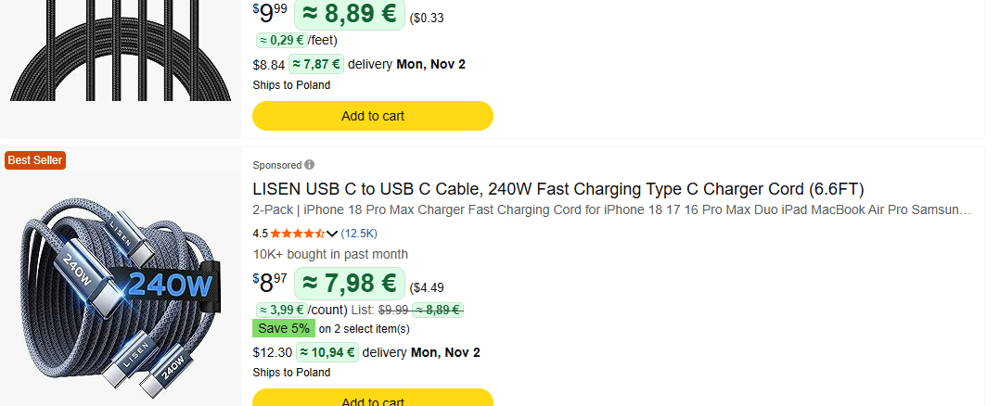

AMAZON’DA TWINPRICE
Amazon narxlarini o‘z valyutangizda ko‘ring
Boshqa mamlakatning Amazon saytida xarid qilyapsizmi? Twinprice narxlarni o‘z valyutangizda asl qiymat yonida ko‘rsatadi. Ularni kalkulyatorsiz solishtiring.

Amazon narxlarini qanday aylantirish mumkin
- Twinprice’ni Chrome Web Store yoki Firefox Add-ons orqali o‘rnating.
- Amazon sahifasini, masalan, qidiruv natijalari yoki mahsulot sahifasini oching.
- Sahifada Twinprice taklif qilgan Narxlarni aylantirish tugmasini bosing yoki Twinprice oynasida Sahifadagi narxlarni aylantirish tugmasini bosing.
- Shu Amazon saytida narxlarni har safar aylantirish uchun Sahifa sozlamalari bo‘limida Bu saytda avtomatik aylantirish bandini yoqing.
Twinprice Amazon’da qaysi narxlarni aylantiradi
$9.99 kabi belgili va PLN 34.98 kabi valyuta kodli narxlar. amazon.com chet eldagi yetkazib berish manzili tanlanganda kodli narxlarni ko‘rsatadi. Dona narxlari va ustidan chiziq tortilgan ro‘yxat narxlari ham aylantiriladi.
To‘lovdan oldin
To‘lov paytida Amazon o‘z valyutangizda hisob-kitob qilishni taklif qilishi mumkin. Amazon bu kursni o‘zi belgilaydi, u Twinprice ko‘rsatgan ma’lumot kursidan farq qilishi mumkin. Bankingiz yoki karta emitenti ham o‘z kursini qo‘llashi va haq olishi mumkin.
Twinprice Amazon’dan mustaqil.
O‘rnatish bepul. Hisob ochish shart emas. Boshlash qo‘llanmasini o‘qing.